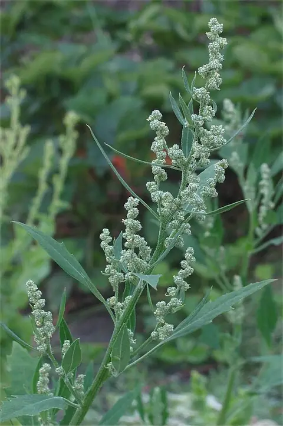

Breads & rice · Popular in Northern plains
Bathua paratha
Bathua paratha is made with wild bathua, a favourite in Northern plains.

How do you make bathua paratha?
Chopped bathua kneaded into wheat dough with ajwain, rolled and roasted with ghee.
Wild ingredients
- Bathua (Chenopodium album): in season November to March
Watch the recipe

Video: NishaMadhulika on YouTube